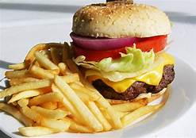
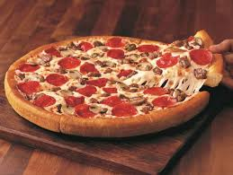
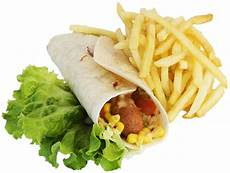
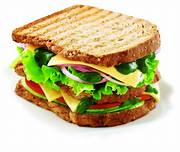

Fresh crispy bun , lettuce leaves , pickles , onion and a small patty flavored with mayonnaise and ketchup — this is a classic portrait of a burger , the most common «fast» food in the United States , from which daily poisoning in hospital beds are tens of thousands of Americans
VEG BURGER
PRICE : 80
COMBO : 100
As with most sausages, hot dogs must be in a casing to be cooked. Traditional casing is made from the small intestines of sheep. The products are known as "natural casing" hot dogs or frankfurters. These hot dogs have firmer texture and a "snap" that releases juices and flavor when the product is bitten.

HOT DOG
PRICE : 100
COMBO : 120
A sweetened frozen food typically eaten as a snack or dessert. It is usually made from dairy products, such as milk and cream, and often combined with fruits or other ingredients and flavors. It is typically sweetened with sugar or sugar substitutes.

ICE CREAM
PRICE : 50
A flat, open-faced baked pie of Italian origin, consisting of a thin layer of bread dough topped with spiced tomato sauce and cheese, often garnished with anchovies, sausage slices, mushrooms, etc.
PIZZA
PRICE : 90
COMBO : 120
Veg Rolls are crispy deep fried snacks filled with a delicious stuffing of lightly spiced and crunchy vegetables. ... You can use any mix of vegetables for the filling. Cabbage and capsicum are the most commonly used ones as they help to enhance the taste. You can also add carrots, beans, sprouts etc
VEG ROLL
PRICE : 80
A sandwich is a food typically consisting of vegetables, sliced cheese or meat, placed on or between slices of bread, or more generally any dish wherein two or more pieces of bread serve as a container or wrapper for another food type.
SANDWICH
PRICE : 40
COMBO : 70